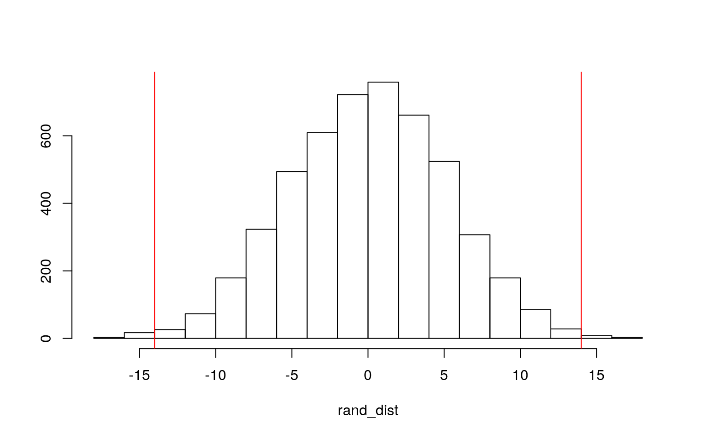
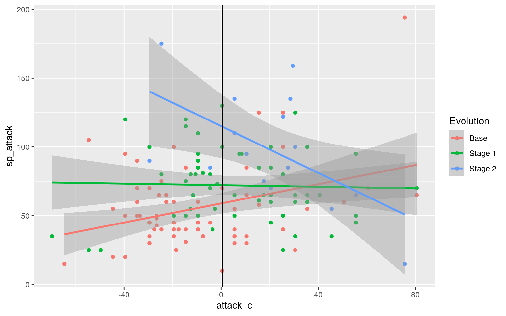
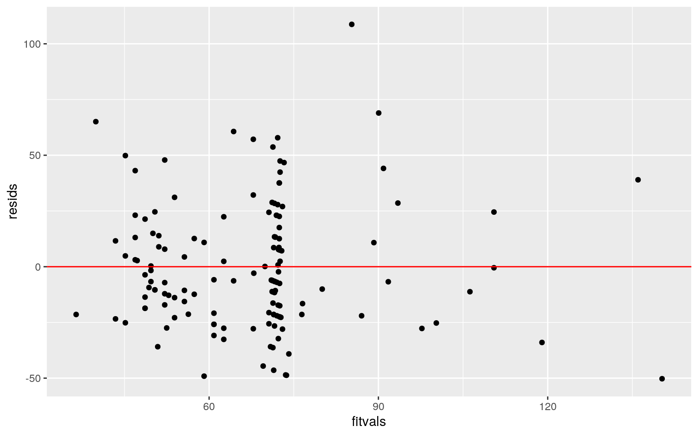
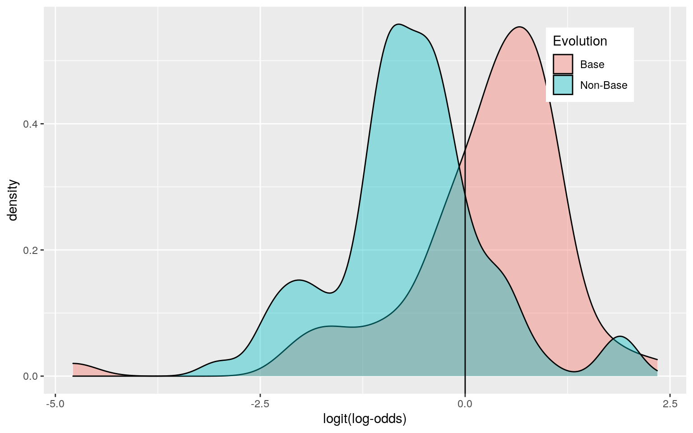
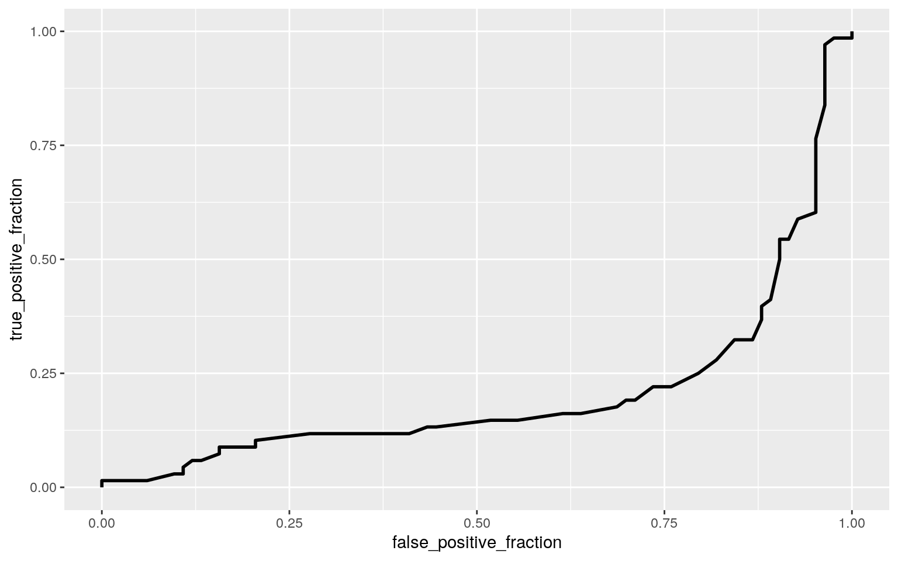

library(readxl)
PokemonDataset <- read_excel("PokemonDataset.xlsx")For my project, I utilized data from Pokemon from Generation 1. There are 151 total observations for each variable in this dataset. The first variable studied is Evolution, which is the Pokemon’s relative position in the Evolution Line. Pokemon start off in the Base form, and then may evolve into Stage 1 and Stage 2 evolutions. The next 5 variables studied are attack, special attack, defense, special defense, and speed. These are all unique to each Pokemon, and are numerical values that correspond to their strength in each respective statistic. Evolution will also be mutated into a binary categorical variable, studying Pokemon on if they are in the Base form or an evolved form of the Pokemon. # Manova/Anova Testing ## MANOVA Test
man1 <- manova(cbind(attack, defense, sp_attack, sp_defense, speed) ~ Evolution, data = PokemonDataset)
summary(man1)## Df Pillai approx F num Df den Df Pr(>F)
## Evolution 2 0.31034 5.3265 10 290 3.211e-07 ***
## Residuals 148
## ---
## Signif. codes: 0 '***' 0.001 '**' 0.01 '*' 0.05 '.' 0.1
' ' 1A Manova test was performed to see if the variables will be significant or not. The results showed a p-value of 5.166e-08, which means at least one of the variables was statistically significant. To see which variables were statisticaly significant, univariate ANOVA tests will be performed for each variable. It appears that each MANOVA observations were met, since there were enough observation for each criteria studied. There also does not appear to be many outliers, and there seems to be a linear relationship between the dependent variables, meaning I can assume that most MANOVA assumptions are likely to be met.
summary.aov(man1)## Response attack :
## Df Sum Sq Mean Sq F value Pr(>F)
## Evolution 2 14436 7217.8 8.9511 0.0002139 ***
## Residuals 148 119340 806.4
## ---
## Signif. codes: 0 '***' 0.001 '**' 0.01 '*' 0.05 '.' 0.1
' ' 1
##
## Response defense :
## Df Sum Sq Mean Sq F value Pr(>F)
## Evolution 2 5607 2803.53 3.4059 0.0358 *
## Residuals 148 121824 823.14
## ---
## Signif. codes: 0 '***' 0.001 '**' 0.01 '*' 0.05 '.' 0.1
' ' 1
##
## Response sp_attack :
## Df Sum Sq Mean Sq F value Pr(>F)
## Evolution 2 31706 15852.8 17.229 1.877e-07 ***
## Residuals 148 136181 920.1
## ---
## Signif. codes: 0 '***' 0.001 '**' 0.01 '*' 0.05 '.' 0.1
' ' 1
##
## Response sp_defense :
## Df Sum Sq Mean Sq F value Pr(>F)
## Evolution 2 21584 10792 20.061 1.953e-08 ***
## Residuals 148 79618 538
## ---
## Signif. codes: 0 '***' 0.001 '**' 0.01 '*' 0.05 '.' 0.1
' ' 1
##
## Response speed :
## Df Sum Sq Mean Sq F value Pr(>F)
## Evolution 2 9399 4699.7 5.8829 0.00348 **
## Residuals 148 118234 798.9
## ---
## Signif. codes: 0 '***' 0.001 '**' 0.01 '*' 0.05 '.' 0.1
' ' 1The results of the univariate ANOVA tests show that all variable differences when controlling for Evolution are statistically significant. This can be seen with a p-value of 0.0002139 for attack, 0.0358 for defense, 1.877e-07 for special attack, 1.953e-08 for special defense, and 0.00348 for speed.
pairwise.t.test(PokemonDataset$attack, PokemonDataset$Evolution, p.adj = "none")##
## Pairwise comparisons using t tests with pooled SD
##
## data: PokemonDataset$attack and PokemonDataset$Evolution
##
## Base Stage 1
## Stage 1 0.00529 -
## Stage 2 0.00015 0.04940
##
## P value adjustment method: nonepairwise.t.test(PokemonDataset$defense, PokemonDataset$Evolution, p.adj = "none")##
## Pairwise comparisons using t tests with pooled SD
##
## data: PokemonDataset$defense and
PokemonDataset$Evolution
##
## Base Stage 1
## Stage 1 0.041 -
## Stage 2 0.031 0.432
##
## P value adjustment method: nonepairwise.t.test(PokemonDataset$sp_attack, PokemonDataset$Evolution, p.adj = "none")##
## Pairwise comparisons using t tests with pooled SD
##
## data: PokemonDataset$sp_attack and
PokemonDataset$Evolution
##
## Base Stage 1
## Stage 1 0.00242 -
## Stage 2 5.5e-08 0.00039
##
## P value adjustment method: nonepairwise.t.test(PokemonDataset$sp_defense, PokemonDataset$Evolution, p.adj = "none")##
## Pairwise comparisons using t tests with pooled SD
##
## data: PokemonDataset$sp_defense and
PokemonDataset$Evolution
##
## Base Stage 1
## Stage 1 3.4e-06 -
## Stage 2 2.1e-07 0.03
##
## P value adjustment method: nonepairwise.t.test(PokemonDataset$speed, PokemonDataset$Evolution, p.adj = "none")##
## Pairwise comparisons using t tests with pooled SD
##
## data: PokemonDataset$speed and PokemonDataset$Evolution
##
## Base Stage 1
## Stage 1 0.0198 -
## Stage 2 0.0021 0.1278
##
## P value adjustment method: nonePairwise t-tests were performed to see if the mean differences for each evolution stage had a significant difference for each statistic for the Pokemon. Generally, the mean difference was statistically significant.
(1-(0.95^21))## [1] 0.6594384(0.05/21)## [1] 0.002380952pairwise.t.test(PokemonDataset$attack, PokemonDataset$Evolution, p.adj = "bonferroni")##
## Pairwise comparisons using t tests with pooled SD
##
## data: PokemonDataset$attack and PokemonDataset$Evolution
##
## Base Stage 1
## Stage 1 0.01587 -
## Stage 2 0.00045 0.14819
##
## P value adjustment method: bonferronipairwise.t.test(PokemonDataset$defense, PokemonDataset$Evolution, p.adj = "bonferroni")##
## Pairwise comparisons using t tests with pooled SD
##
## data: PokemonDataset$defense and
PokemonDataset$Evolution
##
## Base Stage 1
## Stage 1 0.122 -
## Stage 2 0.092 1.000
##
## P value adjustment method: bonferronipairwise.t.test(PokemonDataset$sp_attack, PokemonDataset$Evolution, p.adj = "bonferroni")##
## Pairwise comparisons using t tests with pooled SD
##
## data: PokemonDataset$sp_attack and
PokemonDataset$Evolution
##
## Base Stage 1
## Stage 1 0.0073 -
## Stage 2 1.7e-07 0.0012
##
## P value adjustment method: bonferronipairwise.t.test(PokemonDataset$sp_defense, PokemonDataset$Evolution, p.adj = "bonferroni")##
## Pairwise comparisons using t tests with pooled SD
##
## data: PokemonDataset$sp_defense and
PokemonDataset$Evolution
##
## Base Stage 1
## Stage 1 1.0e-05 -
## Stage 2 6.2e-07 0.089
##
## P value adjustment method: bonferronipairwise.t.test(PokemonDataset$speed, PokemonDataset$Evolution, p.adj = "bonferroni")##
## Pairwise comparisons using t tests with pooled SD
##
## data: PokemonDataset$speed and PokemonDataset$Evolution
##
## Base Stage 1
## Stage 1 0.0593 -
## Stage 2 0.0064 0.3833
##
## P value adjustment method: bonferroniThe pairwise t-tests showed that the probability of a type I error was 0.6594384, which is equal to 65.94%. The adjusted significance level for this was equal to 0.002380952. Bonferroni corrected pairwise t-tests were then conducted, finding that there were mean differences between the Base and Stage 1 evolutions for attack, special attack, and defense were statistically significant. The mean differences between stage 1 and stage 2 for only special attack were statistically significant, and all of the mean differences between Base and Stage 2 for each numeric variable was found to be statistically significant. This can be explained due to the relative strength of Stage 2 Pokemon compared to Base Pokemon, as evolution results in stronger Pokemon.
NewPokemonDataset <- PokemonDataset %>% filter(Evolution == "Base" | Evolution == "Stage 1")
rand_dist <- vector()
for (i in 1:5000) {
new <- data.frame(attack=sample(NewPokemonDataset$attack),
Evolution = NewPokemonDataset$Evolution)
rand_dist[i] <- mean(new[new$Evolution == "Base",]$attack) - mean(new[new$Evolution == "Stage 1",]$attack)}
NewPokemonDataset %>% group_by(Evolution) %>% summarize(means = mean(attack)) %>%
summarize(mean_diff = diff(means))## # A tibble: 1 x 1
## mean_diff
## <dbl>
## 1 14.0mean(rand_dist > 13.99908 | rand_dist < -13.99908)## [1] 0.0062The mean difference between Pokemon in the Base stage and the Stage 1 evolution stage in the attack statistic value was found to be statistically significant. The null hypothesis for this experiment states that the mean difference of the attack stat for Base and Stage 1 Pokemon was the same. With a p-value of 0.0052, the null hypothesis can be rejected. A plot was then created to visualize the null distribution and the test statistic of attack. The plot shows that most of the data fall within the two extremes for the test statistic, which means the actual mean difference was large enough to assume that the attack stat differs in these two Evolution stages of Pokemon by something other than random chance. This sampling distribution also shows that the probability of getting a difference as big as 13.99908 is less than 0.05.
{hist(rand_dist,main="",ylab=""); abline(v = c(-13.99908, 13.99908),col="red")} The distribution of this sample against the actual mean difference test statistic shows that even under random sampling, there is a significant mean difference between evolution stages “Base” and “Stage 1” for attack.
Poke3 <- PokemonDataset %>% select(attack, sp_attack, Ptype = "Primary Type", defense, sp_defense, speed, Evolution, `Dex Number`)
Poke3$attack_c <- Poke3$attack - mean(Poke3$attack,na.rm = T)
pokeTest <- Poke3 %>% filter(Ptype == "rock" | Ptype == "bug" | Ptype == "electric" | Ptype == "fire" | Ptype == "water" | Ptype == "grass" | Ptype == "fighting" | Ptype == "ground" | Ptype == "poison" | Ptype == "normal" | Ptype == "psychic")
fit <- lm(sp_attack ~ attack_c * Evolution, data=pokeTest)
summary(fit)##
## Call:
## lm(formula = sp_attack ~ attack_c * Evolution, data =
pokeTest)
##
## Residuals:
## Min 1Q Median 3Q Max
## -50.264 -21.431 -6.307 13.912 108.724
##
## Coefficients:
## Estimate Std. Error t value Pr(>|t|)
## (Intercept) 58.9478 3.7166 15.861 < 2e-16 ***
## attack_c 0.3489 0.1228 2.840 0.0052 **
## EvolutionStage 1 13.2189 5.2856 2.501 0.0136 *
## EvolutionStage 2 56.1833 9.6983 5.793 4.64e-08 ***
## attack_c:EvolutionStage 1 -0.3771 0.1795 -2.100 0.0376 *
## attack_c:EvolutionStage 2 -1.2000 0.2993 -4.010 0.0001
***
## ---
## Signif. codes: 0 '***' 0.001 '**' 0.01 '*' 0.05 '.' 0.1
' ' 1
##
## Residual standard error: 28.49 on 135 degrees of freedom
## Multiple R-squared: 0.2667, Adjusted R-squared: 0.2395
## F-statistic: 9.819 on 5 and 135 DF, p-value: 5.06e-08Controlling for Evolution, Pokemon with a mean attack have a special attack value of the intercept, which is 58.9478. Still controlling for Evolution, every 1 unit increase from the mean attack corresponds to a special attack value increase of 0.3489. Furthermore, the following data analyzes the special attack value of a Pokemon of any given Evolution Stage at the mean value of attack. For example, when examining a Pokemon in Stage 2 of Evolution, it is seen that at a mean value for attack, the special attack value of a Stage 2 Pokemon is about 56.1833 greater than the value when controlled for Evolution. Furthermore, the effect of mean attack on special attack for Stage 2 Pokemon are about -1.2 lower than when controlled for Evolution. Finally, the R^2 value of 0.2667 shows that 26.67% of variability in special attack is explained by this model of interaction between attack and Evolution.
pokeTest %>% select(sp_attack, attack_c, Evolution) %>% na.omit %>% ggplot(aes(attack_c, sp_attack, color = Evolution)) + geom_point() + geom_smooth(method="lm") + geom_vline(xintercept=mean(pokeTest$attack_c,na.rm=T,lty=2)) ## Check Assumptions
resids <- fit$residuals
fitvals <- fit$fitted.values
ggplot() + geom_point(aes(fitvals,resids)) + geom_hline(yintercept=0, color="red")
ks.test(resids, "pnorm", mean=0, sd(resids))##
## One-sample Kolmogorov-Smirnov test
##
## data: resids
## D = 0.10772, p-value = 0.07582
## alternative hypothesis: two-sidedThe linear regression model shows that the model passes the assumption of homoskedasticity since the graph does not fan out. However, the residual plot shows linear trends in the data, so the model does violate linearity. Finally, the p-value of 0.07592 from the Kolmogorov-Smirnov test shows that this model passes the assumptions of normality, causing me to fail to reject the null hypothesis that states that the linear regression model is normally distributed.
coeftest(fit, vcov = vcovHC(fit))##
## t test of coefficients:
##
## Estimate Std. Error t value Pr(>|t|)
## (Intercept) 58.94775 5.15315 11.4392 < 2.2e-16 ***
## attack_c 0.34885 0.23378 1.4922 0.1379794
## EvolutionStage 1 13.21890 6.46663 2.0442 0.0428806 *
## EvolutionStage 2 56.18333 15.85222 3.5442 0.0005416 ***
## attack_c:EvolutionStage 1 -0.37708 0.28098 -1.3420
0.1818477
## attack_c:EvolutionStage 2 -1.19996 0.54554 -2.1996
0.0295380 *
## ---
## Signif. codes: 0 '***' 0.001 '**' 0.01 '*' 0.05 '.' 0.1
' ' 1The linear regression model with robust standard errors find that effects of mean attack stat are no longer statistically significant compared to the linear model. Furthermore, the effects on special attack for stage 1 Pokemon at a mean attack stat are no longer significant. The standard errors for each of these variables increased in relation to the original linear regression model.
samp_distn <- replicate(5000,{
boot_dat <- sample_frac(pokeTest, replace=T)
fit2 <- lm(sp_attack ~ attack_c * Evolution, data=boot_dat)
coef(fit2)
})
samp_distn %>% t %>% as.data.frame %>% summarize_all(sd)## (Intercept) attack_c EvolutionStage 1 EvolutionStage 2
attack_c:EvolutionStage 1
## 1 4.657532 0.2078734 6.045798 13.07616 0.2533788
## attack_c:EvolutionStage 2
## 1 0.4681738Comparing the Linear Regression Model with Bootstrapping had increased errors for each variable when compared to the original Linear Regression Model, which means the p-values most likely went up. However, this model had less error than the Linear Regression Model with Bootstrapping, meaning the p-values comparatively went down.
Poke4 <- PokemonDataset %>% mutate(y=ifelse(Evolution=="Base",1,0))
Poke4_fit <- glm(y ~ attack + sp_attack, data=Poke4, family=binomial(link="logit"))
exp(coef(Poke4_fit))## (Intercept) attack sp_attack
## 18.2793401 0.9800212 0.9762481Creating a logistic regression model allows me to predict the odds of a Pokemon being a Base evolution Pokemon from the two explanatory variables of attack and special attack. This model shows that for a 1 point increase in attack while controlling for special attack, the probability of a Pokemon being in the Base form is multiplied by a coefficient of 0.9800212. For a 1 point increase in Special Attack controlled for attack, the odds of a Pokemon being in the Base form is multiplied by a factor of 0.9762481. The results of this test show that both attack and special attack increases still have relatively the same impact on the odds of a Pokemon being in the Base form. ## Confusion Matrix and Accuracy, Sensitivity, and Specificity
probability <- predict(Poke4_fit, type = "response")
class_diag(probability, Poke4_fit$y)## acc sens spec ppv auc
## 1 0.7615894 0.6764706 0.8313253 0.7666667 0.7934975table(predict = as.numeric(probability > 0.5), truth = Poke4_fit$y) %>% addmargins## truth
## predict 0 1 Sum
## 0 69 22 91
## 1 14 46 60
## Sum 83 68 151The confusion matrix for the logistic regression shows that the Accuracy for the model, which is the proportion of correctly classified Pokemon, is 0.7615894. The sensitivity of the model, which is the proportion of Pokemon that are correctly classified as not in the Base evolution stage, is 0.6764706. The specificity of the model, which is the proportion of Pokemon properly classified as in the Base evolution stage, is 0.8313253. THe precision of the model, which is the proportion of Pokemon classified as not in the Base stage and are actually not in the Base stage is 0.7666667. Lastly, the AUC of the model, which is the probability that a randomly selected Pokemon is in the Base stage vs the a randomly selected pokemon that is not in the Base stage, is 0.7934975. This is considered to be a fair AUC for this model.
Poke4 <- Poke4 %>% mutate(Evolution=ifelse(y==1, "Base", "Non-Base"))
Poke4$logit <- predict(Poke4_fit, type="link")
Poke4 %>% mutate(Evolution=as.factor(Evolution)) %>% ggplot() + geom_density(aes(logit, fill=Evolution), alpha=0.4) + theme(legend.position=c(0.85, 0.85)) + xlab("logit(log-odds)") + geom_vline(xintercept=0)
plot <- ggplot(Poke4) + geom_roc(aes(d=y, m=attack + sp_attack), n.cuts=0)
plot
calc_auc(plot)## PANEL group AUC
## 1 1 -1 0.2063253Poke5 <- Poke4 %>% select(y, defense, sp_defense, speed)
Poke5_fit <- glm(y~ defense + sp_defense + speed, data=Poke5, family=binomial(link="logit"))
probability2 <- predict(Poke5_fit, type="response")
class_diag(probability2, Poke5$y)## acc sens spec ppv auc
## 1 0.7748344 0.7352941 0.8072289 0.7575758 0.779146The logistic regression with In-Sample Classification DIagnostics shows that the Accuracy for the model, which is the proportion of correctly classified Pokemon, is 0.7748344. The sensitivity of the model, which is the proportion of Pokemon that are correctly classified as not in the Base evolution stage, is 0.7352941. The specificity of the model, which is the proportion of Pokemon properly classified as in the Base evolution stage, is 0.8072289. The precision of the model, which is the proportion of Pokemon classified as not in the Base stage and are actually not in the Base stage is 0.7575758. Lastly, the AUC of the model, which is the probability that a randomly selected Pokemon is in the Base stage vs the a randomly selected pokemon that is not in the Base stage, is 0.779146. This is considered to be a fair AUC for this model, but is lower than the previous model from the confusion matrix.
set.seed(1234)
k=10
data <- Poke5[sample(nrow(Poke5)),]
folds <- cut(seq(1:nrow(Poke5)),breaks=k, labels=F)
diags <- NULL
for(i in 1:k){
train <- data[folds!=i,]
test <- data[folds==i,]
truth <- test$y
fit <- glm(y~ defense + sp_defense + speed, data=train, family=binomial(link="logit"))
probs <- predict(fit, newdata=test, type="response")
diags <- rbind(diags,class_diag(probs,truth))
}
summarize_all(diags,mean)## acc sens spec ppv auc
## 1 0.755 0.7462698 0.7865598 0.7264683 0.7724691The 10-fold CV and Average Out-of Sample Classification Diagnostics shows that the Accuracy for the model, which is the proportion of correctly classified Pokemon, is 0.755. The sensitivity of the model, which is the proportion of Pokemon that are correctly classified as not in the Base evolution stage, is 0.7462698. The specificity of the model, which is the proportion of Pokemon properly classified as in the Base evolution stage, is 0.7865598. THe precision of the model, which is the proportion of Pokemon classified as not in the Base stage and are actually not in the Base stage is 0.7264683. Lastly, the AUC of the model, which is the probability that a randomly selected Pokemon is in the Base stage vs the a randomly selected Pokemon that is not in the Base stage, is 0.7724691. This is considered to be a fair AUC for this model, but is slightly worse than the previous model.
y <- as.matrix(Poke5$y)
x <- model.matrix(y~., data=Poke5)[,-1]
cv <- cv.glmnet(x,y,family="binomial")
lasso <- glmnet(x,y,family="binomial", lambda=cv$lambda.1se)
coef(lasso)## 4 x 1 sparse Matrix of class "dgCMatrix"
## s0
## (Intercept) 0.79868069
## defense .
## sp_defense -0.01485374
## speed .Performing a LASSO on the same model and variables as the 10-fold CV shows that only Special Defense was retained. Therefore, this variable is seen to be the best predictor for if a Pokemon is in the Base Stage.
set.seed(1234)
k=10
data <- Poke5[sample(nrow(Poke5)),]
folds <- cut(seq(1:nrow(Poke5)),breaks=k, labels=F)
diags <- NULL
for(i in 1:k){
train <- data[folds!=i,]
test <- data[folds==i,]
truth <- test$y
fit <- glm(y~ sp_defense, data=train, family=binomial(link="logit"))
probs <- predict(fit, newdata=test, type="response")
diags <- rbind(diags,class_diag(probs,truth))
}
summarize_all(diags,mean)## acc sens spec ppv auc
## 1 0.7220833 0.6615476 0.7786233 0.6945238 0.7801328Performing the 10-fold CV using special defense which was selected from the LASSO model, the AUC was found to be 0.7801328. This is slightly greater than the previous model, and since all of the AUC values were considered to be close from each other and were of a fair value, the 10-fold CV model is considered to be not over-fitting.